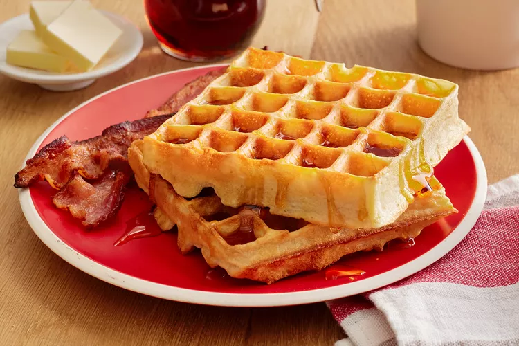

Waffles

Description
This waffle recipe is the only one you'll need to make homemade waffles with your waffle iron. Simple pantry ingredients mix up quickly in this easy batter
that can be used right away
or stored in the refrigerator for up to a week. Serve waffles hot with whipped cream
and fresh fruit or with butter and maple syrup for either breakfast, brunch, or a snack.
Ingredients
You likely already have all the ingredients you'll need for this waffle recipe. If not, here's what to add to your grocery list:
- Eggs: This waffle recipe starts with two whole eggs, whisked until light and fluffy.
- Flour: All-purpose flour adds gluten, which gives the waffles structure. You can also use whole wheat flour.
- Milk: Whole milk lends richness and moisture. Plus, it helps create the ideal batter consistency.
- Oil: A neutral oil, such as vegetable oil, ensures the waffles are nice and moist.
- Sugar: A tablespoon of white sugar adds the perfect amount of sweetness.
- Baking powder: Baking powder acts as a leavener, which means it contributes to the waffles' light and fluffy texture.
- Salt: A pinch of salt enhances the other flavors. Don't skip this step!
- Vanilla: A dash of vanilla adds complexity and enhances the overfall flavor.
- cooking Spray: You'll need to spray the iron with nonstick cooking spray before you start making the waffles.
Steps
You'll find the full, step-by-step recipe below — but here's a brief overview of what you can expect when you make the best waffles of your life:
- Make the batter: Whisk the eggs, then add the flour, milk, and oil. Whisk in the sugar. Stir in the remaining ingredients.
- Make the waffles: Pour the batter onto the hot, prepared waffle iron. Cook until golden brown and repeat with the remaining batter.